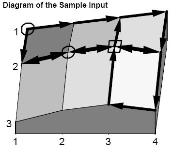

Home Page
F.A.Qs
Statistical Charts
Past Contests
Scheduled Contests
Award Contest
| Online Judge | Problem Set | Authors | Online Contests | User | ||||||
|---|---|---|---|---|---|---|---|---|---|---|
| Web Board Home Page F.A.Qs Statistical Charts | Current Contest Past Contests Scheduled Contests Award Contest | |||||||||
|
Language: Jill's Bike
Description Jill Bates hates climbing hills. Jill rides a bicycle everywhere she goes, but she always wants to go the easiest and shortest way possible. The good news is that she lives in Greenhills, which has all its roads laid out in a strictly rectangular grid--east-west roads are streets; north-south roads are avenues and the distance between any two adjacent grid points is the same. The bad news is that Greenhills is very hilly and has many one-way roads.
In choosing a route between where she starts and where she ends, Jill has three rules:
Your program should help Jill find an acceptable route. Input The input contains data for several maps in the following form:
You may assume that all street and avenue numbers are within the bounds defined by the first line of input, and that all road definitions are strictly north-south or east-west. Output For each path query in the input, output a sequence of grid points , from the starting grid point to the ending grid point, which meets Jill's three rules. Output grid points as 'street-avenue' separated by the word 'to'. If there is more than one path that meets Jill's criteria, any such path will be acceptable. If no route satisfies all the criteria, or if the starting and ending grid points are the same, output an appropriate message to that effect. Output a blank line between each output set. Sample Input 3 4 10 15 20 25 19 30 35 30 10 19 26 20 1 1 1 4 2 1 2 4 3 4 3 3 3 3 1 3 1 4 3 4 2 4 2 1 1 1 2 1 0 0 0 0 1 1 2 2 2 3 2 3 2 2 1 1 0 0 0 0 Sample Output 1-1 to 1-2 to 1-3 to 1-4 to 2-4 to 2-3 to 2-2 To get from 2-3 to 2-3, stay put! There is no acceptable route from 2-2 to 1-1. Hint  Source | ||||||||||
[Submit] [Go Back] [Status] [Discuss]
All Rights Reserved 2003-2013 Ying Fuchen,Xu Pengcheng,Xie Di
Any problem, Please Contact Administrator